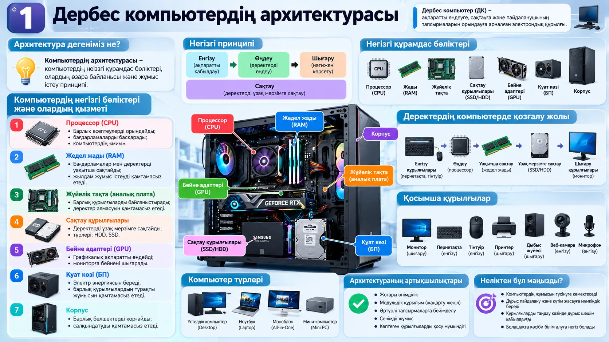
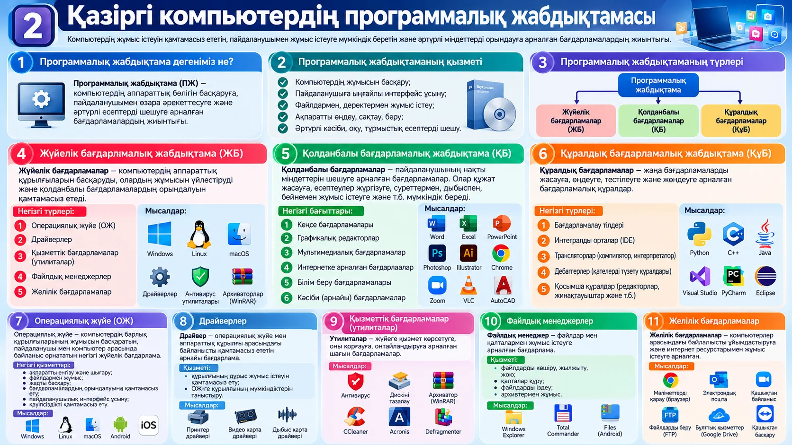

Компьютер архитектурасы мен программалық жабдықтама
Сабақ мақсаты. Дербес компьютердің негізгі бөліктерін және олардың қызметін білу, программалық жабдықтаманың түрлерін ажырату, аппараттық және программалық жабдықтаманың өзара байланысын түсіндіру.
1. Теория
Компьютер қандай бөліктерден тұрады және оны қандай программалар басқарады.
2. Тапсырмалар
Төрт тапсырманың бәрі осы беттің өзінде орындалады және бағаланады (70 балл).
3. Қорытынды
Негізгі ойды бекітіп, өзімізді бағалаймыз.
Теория
Бұл бөлімде компьютердің бөліктерін, олардың қызметін және программалық жабдықтаманың түрлерін үйренесің.
1Компьютер архитектурасы
Компьютердің архитектурасы — компьютердің негізгі құрамдас бөліктері, олардың өзара байланысы және жұмыс істеу принципі. Негізгі принцип: енгізу → өңдеу → шығару, ал деректер сақтауда тұрады. «Алға» батырмасын өзің басасың.
2Негізгі бөліктері және қызметі
Енгізу және шығару құрылғылары
Компьютер түрлері: үстелдік компьютер, ноутбук, моноблок, мини-компьютер.
3Программалық жабдықтама
Программалық жабдықтама (ПЖ) — компьютердің аппараттық бөлігін басқаруға, пайдаланушымен өзара әрекеттесуге және әртүрлі есептерді шешуге арналған бағдарламалар жиынтығы. Ол үш топқа бөлінеді. Қабаттарды өзің ашып көр.
4Түрлері және мысалдары
| Түрі | Не істейді | Мысалдар |
|---|---|---|
| Жүйелік (ЖБ) | Аппаратты басқарады, құрылғылардың жұмысын үйлестіреді, қолданбалы программалардың орындалуын қамтамасыз етеді. | Операциялық жүйе (Windows, Linux, macOS, Android), драйвер, антивирус, архиватор, файл менеджері |
| Қолданбалы (ҚБ) | Пайдаланушының нақты міндеттерін орындайды. | Word, Excel, PowerPoint, Photoshop, Chrome, Zoom, VLC |
| Құралдық (ҚұБ) | Жаңа бағдарламаларды жасауға, тексеруге және өңдеуге арналған. | Python, C++, Java, Visual Studio, PyCharm, Eclipse |
Операциялық жүйе
Құрылғылар мен пайдаланушы арасындағы негізгі бағдарлама: ақпаратты енгізу-шығару, файлдармен жұмыс, жадты бөлу, интерфейс пен қауіпсіздікті қамтамасыз ету.
Драйвер
Операциялық жүйе мен аппараттық құрылғы арасындағы байланысты қамтамасыз етеді: ОЖ құрылғыны таниды және дұрыс жұмыс істетеді (принтер, бейне карта, дыбыс карта драйвері).
Аппарат пен ПЖ байланысы
Аппараттық бөлік программасыз жұмыс істемейді, ал программа аппаратсыз орындалмайды. Мысалы, браузер процессор мен жедел жадты ОЖ арқылы қолданады.
?Өзіңді тексер
Тапсырмалар
Бұл бөлімде төрт тапсырма бар. Барлығын осы беттің өзінде орындайсың, төртеуі де бағаланады: барлығы 70 балл. Жауаптар төменгі «Жіберу» батырмасымен бірге жіберіледі.
| Өлшемшарт | Балл |
|---|---|
| Сабаққа қатысым: сабаққа кіргенде автоматты түседі | 30 |
| 1-тапсырма: 12 құрылғы × 1 | 12 |
| 2-тапсырма: 6 бағдарлама × 1 + 3 топтың қызметі × 2 | 12 |
| 3-тапсырма: компьютер сипаттамасы (6 мәлімет × 1) | 6 |
| 4-тапсырма: түрі 8 × 2 + қызметі 8 × 2 + байланыс мысалдары 2 × 4 | 40 |
| Барлығы | 100 |
1Құрылғыларды қызмет түріне бөл12 балл
Әр құрылғы үшін қызмет түрін таңда: Енгізу, Өңдеу, Сақтау, Шығару.
2Бағдарламаларды топқа жікте12 балл
Әр бағдарлама қай топқа жататынын таңда. Сосын әр топтың негізгі қызметін өз сөзіңмен қысқаша жаз.
3Өз компьютеріңнің сипаттамасы6 балл
Баптаулар → Жүйе → Жүйе туралы терезесін аш (немесе «Бұл компьютер» белгісіне оң түймені басып, «Сипаттар» таңда). Мәліметті тауып, кестеге жаз.
4Аппараттық және программалық жабдықтама40 балл
Төмендегі құрылғылар мен бағдарламалардың түрін (аппараттық не программалық) көрсет және қызметін қысқаша жаз. Сосын аппараттық және программалық жабдықтаманың өзара байланысына 2 мысал келтір.
Қорытынды және бекіту


Бекіту сұрақтары
Драйвер не үшін керек?
Драйвер операциялық жүйе мен аппараттық құрылғы арасындағы байланысты қамтамасыз етеді. Драйверсіз ОЖ құрылғыны дұрыс қолдана алмайды.
Жедел жад пен SSD айырмашылығы неде?
Жедел жад деректерді уақытша және жылдам сақтайды, қуат өшсе деректер жойылады. SSD деректерді ұзақ мерзімге сақтайды.
Өзін-өзі бағалау
Бүгінгі тақырыпты қаншалықты түсіндің?